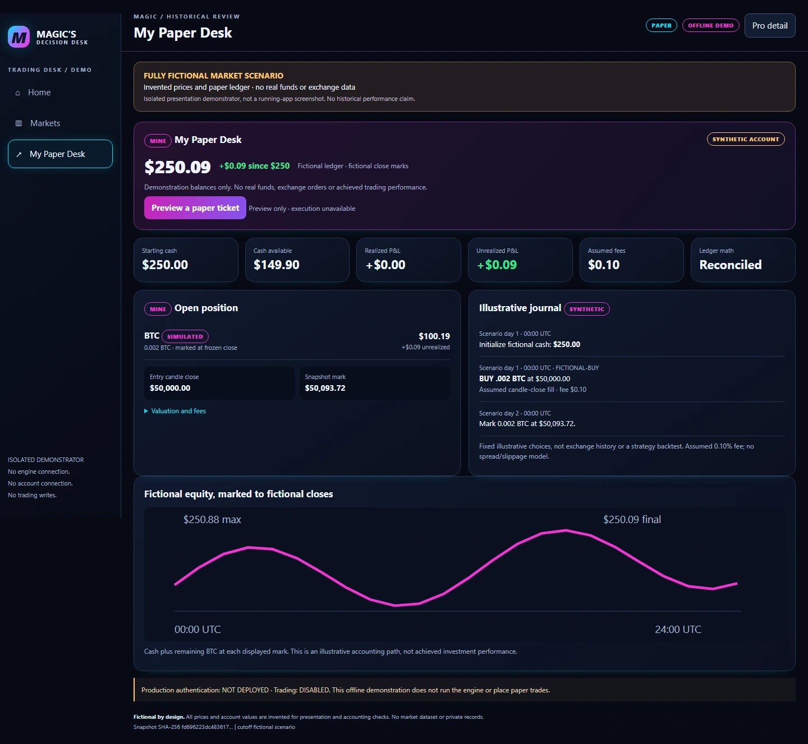
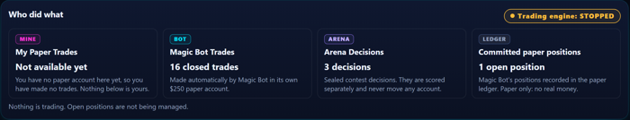
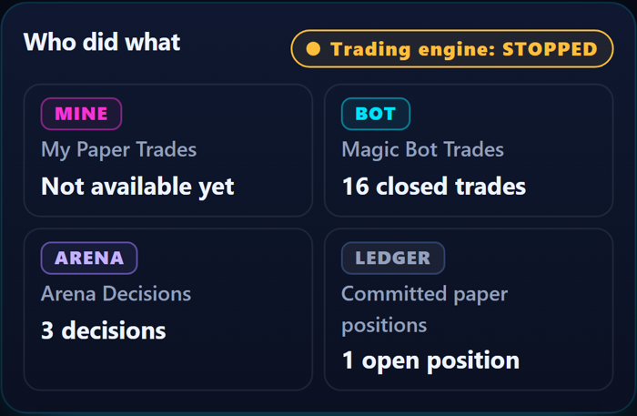
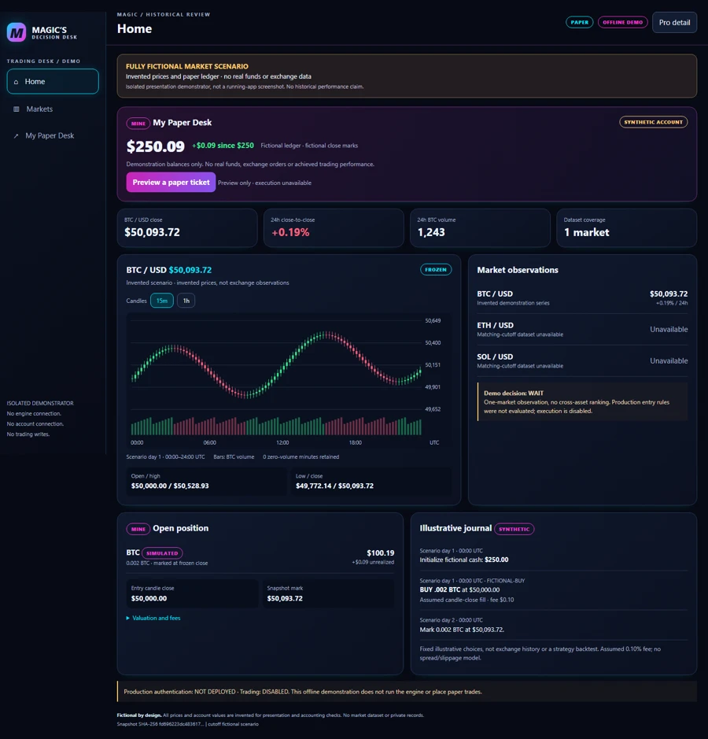
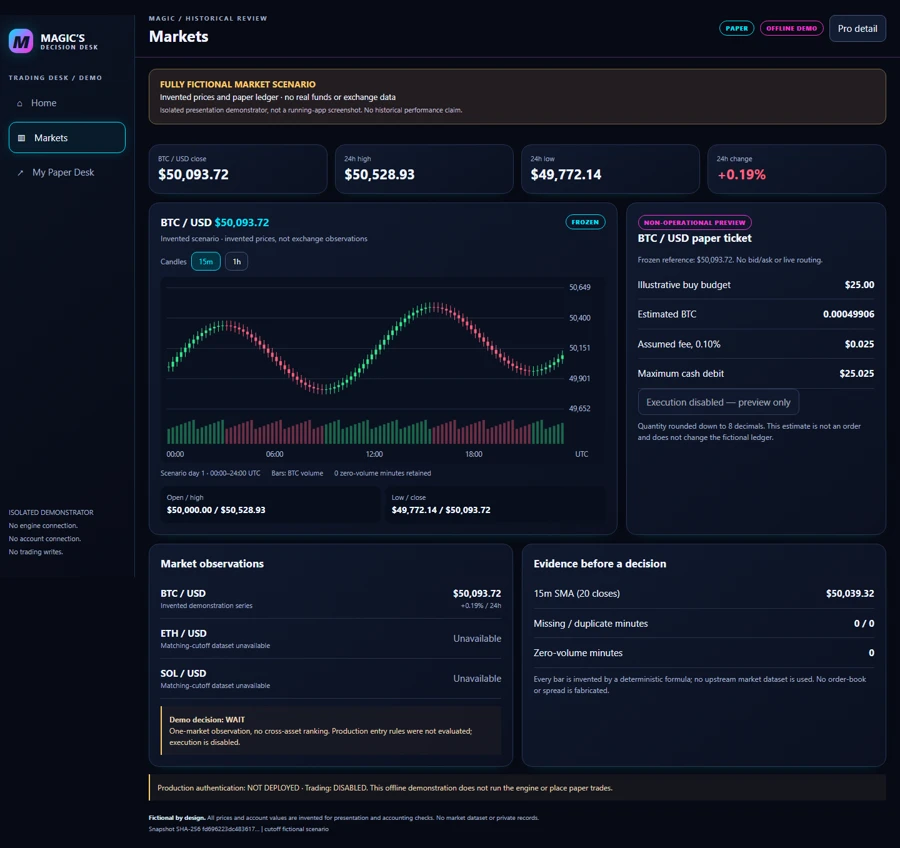
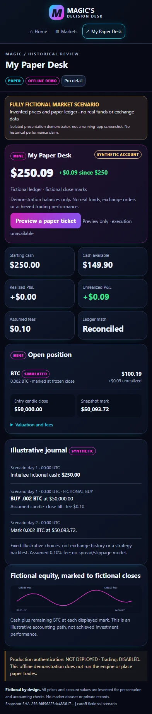

Find opportunities. Check the risk.
Separate opportunity lists feed a timed review using recorded risk rules. A high-ranked coin is something to investigate, not an instruction to buy.
MRMAGIC SUITE · MARKET RESEARCH
Magic’s Decision Desk
From market noise to an accountable decision. A cryptocurrency research app for practicing decisions with pretend money: review market information, consider an opportunity and study a simulated trade.

Public Coinbase market data, recorded so every view can be checked later.
Journaled paper accounts record each simulated trade and its reasons.
See how your call compares with the desk’s automated paper decisions.
An Ask drawer on every page answers from recorded market data and labels each fact as recorded, calculated or an estimate. It declines requests to buy, sell or cancel. AI-written answers are not enabled.

Historical dashboard panel, captured 9 November before the newer paper-desk update. The engine was stopped and one simulated position was unmanaged at capture time. Personal order entry was unavailable in this older build. The crop excludes session identifiers and return values; no application content is reconstructed.
ENLARGE AUTHENTIC CAPTURE ↗Latest project report · 10 November. Supervised paper orders were recorded in separate personal desks. Manual and follow orders were subsequently paused while account display and fee-inclusive spending safeguards are corrected. Real-money trading remains DISABLED. Current-release authentication deployment is not independently verified here.
Part of MrMagic Suite · one assistant across the suite is planned ↗ACTUAL APPLICATION / 9 NOVEMBER 2026
Historical installed-app panel details, separate from fictional demonstrations. The phone-width view is a browser crop, not a native iPhone screenshot or the whole interface.

Historical dashboard panel, captured 9 November before the newer paper-desk update. The engine was stopped and one simulated position was unmanaged at capture time. Personal order entry was unavailable in this older build. The crop excludes session identifiers and return values; no application content is reconstructed.
ENLARGE AUTHENTIC CAPTURE ↗The automated paper session is historical evidence, not profitable-trading validation or unattended-operation qualification. The pictured older build did not provide technical indicators, an order book or working personal trade submission. A later project report records chart, order-book and paper-ticket additions, followed by the safety hold described above. No validated AI contestant is claimed. The Arena illustration below remains illustrative and unscored. Current captures of charts and scanner rankings are retained privately; they are not substituted with invented live results.
THE PURPOSE
Reliable trading software needs more than charts. Market readings grow old, orders can be refused, and simulated trades depend on stated assumptions. Account records must survive interruptions.
Separate opportunity lists feed a timed review using recorded risk rules. A high-ranked coin is something to investigate, not an instruction to buy.
The $250 starting-account concept supports controlled paper comparisons. Automated bot, personal desk and Arena contest contexts are separate; their balances and outcomes must not be combined.
The paper-desk code records a proposed order, whether it was filled or refused, and repeat-request checks. The older form pictured here could not place a personal order. Later paper-order tests do not establish that the subsequent safety hold has been lifted.
HOW IT FITS TOGETHER
A simplified view of each part’s job. Private network and installation details are omitted.
Timestamped observations
Ranking + readiness
Policy + modeled execution
Separate account outcomes
The project code supports these responsibilities. Some connections still need installation or real-equipment testing.
THE ENGINEERING CHALLENGE
An intent is not a fill.
Recorded corrections address interrupted intents, repeated requests and a crash gap during account initialization. Refusing an uncertain outcome is safer than inventing a completed trade. Thin-coin candle reconciliation also led the implementation to withhold unsupported derived series.
AI-assisted comparisons are an evaluation concept, not evidence of a profitable or autonomous trading model. Ask MrMagic and Arena screens do not establish a continuously running paid AI service.
MRMAGIC SUITE
One information packet, separate human and AI paper decisions, then a later reveal. Code contains the recording and comparison steps; independence and reliable scoring still need testing.
Same cutoff. Future prices hidden.
PACKET A · SEALEDPersonal judgment
Choice + rationale
Separate analysis
Choice + rationale
Common paper assumptions. No result yet.
UNSCOREDA concept illustration of the recorded development workflow—not a completed contest, validated trading edge or live AI service.
VISUAL TOUR
Explore the presentation using fully fictional prices and accounting. Original approved captures and historical-data research remain preserved privately.

Genuine browser capture of an isolated demonstrator with invented prices and a fictional paper ledger. Execution disabled; not a running-app screenshot.
ENLARGE BROWSER CAPTURE ↗
Genuine browser capture of an isolated demonstrator with invented prices and a fictional paper ledger. Execution disabled; not a running-app screenshot.
ENLARGE BROWSER CAPTURE ↗
Genuine browser capture of an isolated demonstrator with invented prices and a fictional paper ledger. Execution disabled; not a running-app screenshot.
ENLARGE BROWSER CAPTURE ↗
Genuine browser capture of an isolated demonstrator with invented prices and a fictional paper ledger. Execution disabled; not a running-app screenshot.
ENLARGE BROWSER CAPTURE ↗AUTHENTICATION / PAPER-ONLY BOUNDARY
Face ID and Windows Hello passed the recorded M7 device tests. At that checkpoint, production authentication was NOT DEPLOYED; later M7f changes still needed focused device rechecking. Those historical results do not verify the latest release’s authentication status. Real-money trading remains DISABLED.
Read the sign-in testing story ↗STATUS, WITHOUT THE SPIN
Magic’s Decision Desk implementation status
Public market-data reads, strategy/policy code and development dashboards.
Paper-account history and recovery tests; 12/12 device-test steps and 14/14 unauthorized requests rejected. Later security work: 448 tests run, suite completed successfully with one skipped; 31/31 browser checks using imitation sign-in credentials.
Retest the changed device approvals and emergency lock on real devices. Validate the newer paper-desk display and spending safeguards before lifting its write hold.
The recorded M7 authentication build refused paper-trade writes. The 10 November paper-desk report separately records a manual/follow write hold. Real-money execution is DISABLED; current-release authentication deployment is unverified here.
Descriptions are based on project code and dated test records. This portfolio does not run or provide access to the application.